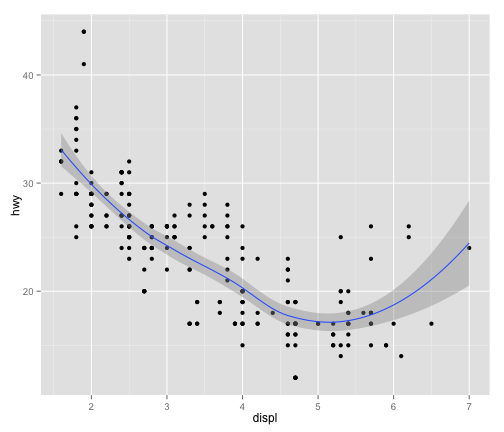
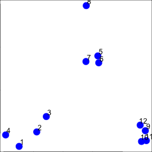

- Principles of Analytic Graphics
- Exploratory graphs
- Plotting Systems in R
- base
- lattice
- ggplot2
- Hierarchical clustering
- K-Means clustering
- Dimension reduction
Jeffrey Leek
Johns Hopkins Bloomberg School of Public Health
qplot(displ, hwy, data = mpg, geom = c("point", "smooth"))

set.seed(1234)
par(mar = c(0, 0, 0, 0))
x <- rnorm(12, mean = rep(1:3, each = 4), sd = 0.2)
y <- rnorm(12, mean = rep(c(1, 2, 1), each = 4), sd = 0.2)
plot(x, y, col = "blue", pch = 19, cex = 2)
text(x + 0.05, y + 0.05, labels = as.character(1:12))
